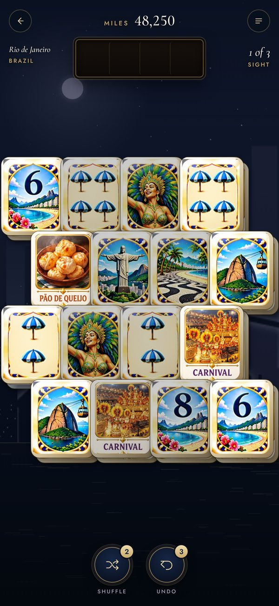
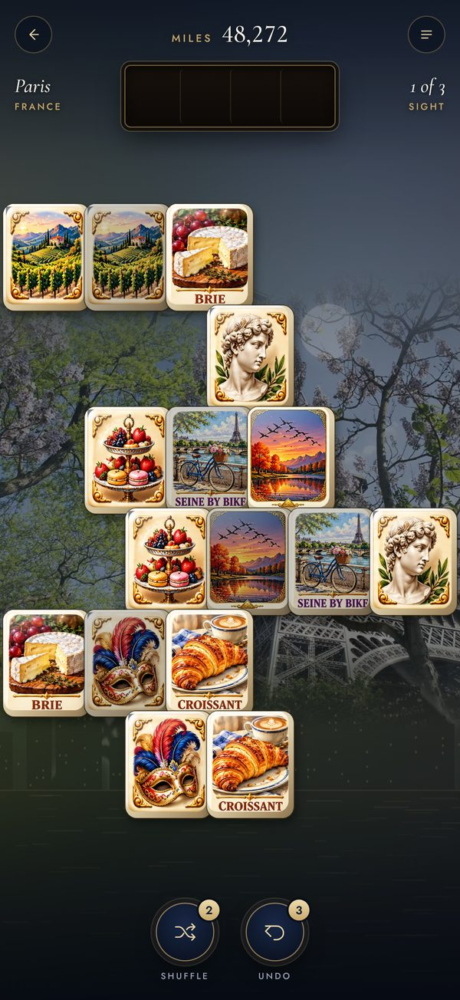
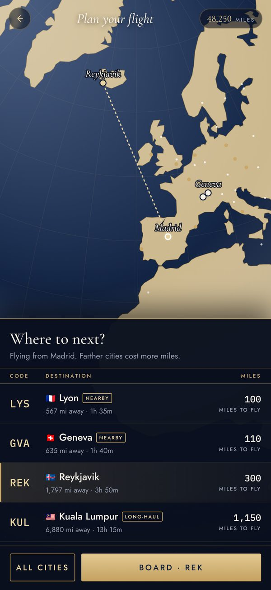
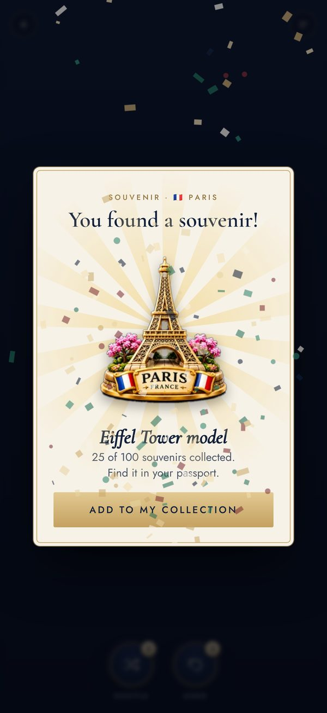

100 citiesFrom New York to Kyoto, Rio to Reykjavik, plan your route on the map and earn miles to fly further.
300 sightsClear the board to reveal a real photo of each landmark, then ace the city quiz for your passport stamp.
Painted tile setsDozens of hand-painted sets: mardi gras masks in New Orleans, cable cars in San Francisco, tuk-tuks in Bangkok.
SouvenirsSpin the prize wheel and collect a keepsake from every city to fill your passport.



